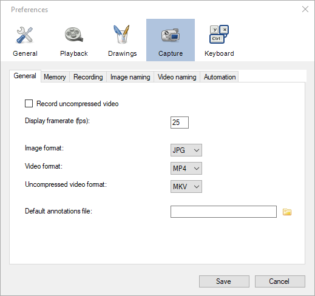
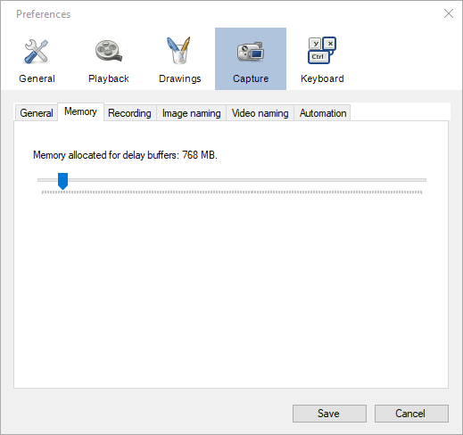
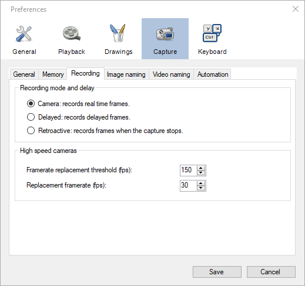
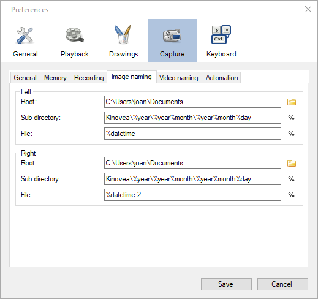
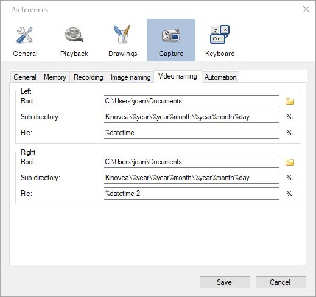
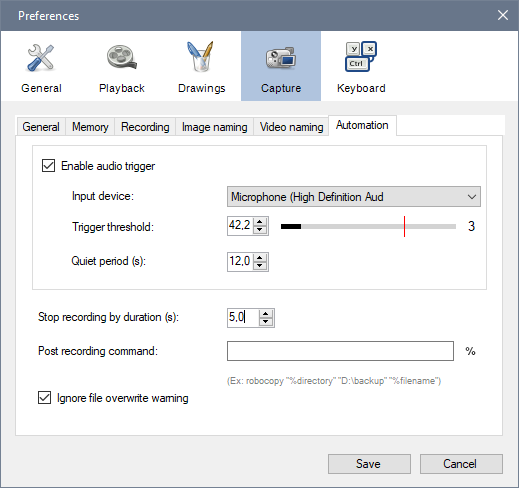

Capture¶
General¶
Record uncompressed video¶
When this option is checked the video are recorded without compressing the video frames to JPEG first. When this option is unchecked the video frames are compressed to JPEG using high quality settings to retain fidelity.
This option can be used to minimize dropped frames, by trading off space for speed (due to the JPEG settings used, image quality shouldn’t really be much impacted by this option). When using a fast storage medium it can be faster to store the large uncompressed images compared to the time it takes to compress them.
For image snapshots the compression depends on the file format.
Note
When configuring cameras to use MJPEG streams this option is ignored. The MJPEG streams are always saved as-is in their container format.
Note
When configuring cameras to use raw Bayer pattern images you must enable this option to be able to reconstruct the color information at playback time.
Warning
Not all video players can play back uncompressed files.
Display framerate¶
This option defines the frequency at which the camera images are updated in the capture screen.
While recording the computer resources are shared between displaying the camera stream and recording it to the storage medium. The highest priority is always given to recording but lowering this value can help reduce the overall load on the computer and improve recording performance.
Image format¶
This option defines the default image format used when saving snapshots.
The following image formats are available:
JPG
PNG
BMP
Video format¶
This option defines the default video container format used when recording compressed videos. All videos are compressed using an MJPEG codec.
The following container formats are available:
MP4
AVI
MKV
Uncompressed video format¶
This option defines the default video container format used when recording uncompressed videos.
The following container formats are available:
MKV
AVI
Default annotations file¶
This option lets you point to a .KVA file containing annotations that will be automatically loaded when any camera stream is opened.
Other annotations files can still be loaded on top of the camera stream by using the menu . They will be merged with each others.
See also: Saving and loading annotation files.
Memory¶
Memory allocated for delay buffers¶
This option controls the amount of memory used to remember old frames, in the context of the delayed view of the camera feed. By extension, this option defines the maximum delay configurable in the capture screen. The maximum delay is based on image size, image format and capture framerate.
When using two capture screens at the same time each screen uses half the memory amount configured.
In the case of multiple instances of MotionON, each instance has its own delay buffer memory.
Warning
Unlike the cache memory in the playback screen, this amount of memory is always allocated and used as soon as a capture screen is opened.
Recording¶
Recording mode and delay¶
The recording mode option defines how the recording sub-system interacts with the delay buffer to create the output video.
When the camera transmits a new frame it is always put in the delay buffer and the recording sub-system always takes frames from the delay buffer to create the output video.
Camera¶
When using this recording mode the delay value set in the capture screen is ignored.
Recording is performed on the fly, the saved frame is always the most recent frame sent by the camera.
Tip
If you do not require recording of delayed images this option can result in slightly better performances than the Delayed method.
Delayed¶
When using this recording mode the delay value set in the capture screen is taken into account.
Recording is performed on the fly, the saved frame is taken from the delay buffer based on the delay value.
This can be used to record actions happening before the moment the record button is hit or triggered.
Retroactive¶
When using this recording mode the recording is not performed on the fly. Instead, at the end of the recording process, when clicking the stop recording button or when the maximum recording duration is reached, the camera feed is paused, the delay buffer is frozen, and the video file is created all at once.
The delay value is taken into account for creating the recording.
This mode offers the best recording performances and minimizes dropped frames, at the cost of a reduced maximum length for created videos and a temporary freezing of the camera feed.
Tip
The maximum length of recorded videos using this recording mode depends on the size of the delay buffer. This can be configured from the Memory preference page.
High speed cameras¶
The options in this group let you alter the framerate written in the metadata of the output file. This influences the amount of resources required to replay the file and the apparent speed of the action.
A camera might be capable of producing and transmitting 1000 frames per second but the computer will not be able to play the file back at that speed and the monitor won’t be able to refresh itself fast enough either. To work around this problem it is usual to reduce the framerate of the output file to a more typical one. Recording devices normally apply this transformation automatically. This results in a video that appears to be in slow motion.
Framerate replacement threshold¶
This option controls the framerate from which the output file is modified to use a lower one.
If the camera is configured to send images at a higher framerate than this value, the actual framerate stored in the file metadata will be the replacement framerate. If the camera is configured to send images at a lower framerate than this value, no change will happen.
Replacement framerate¶
This value defines the final framerate written in the file metadata when the framerate configured in the camera is above the threshold.
Image naming¶
The options on this page let you configure the automated naming system for image snapshots of the camera stream.
The final path and file name is created by concatenating the Root, Sub directory and File values. Each field can contain special macros referring to context variables that are automatically inserted in the final path.
If no context variable are used at all, the file naming system will prepare the next recording by automatically incrementing a counter and appending a number to the file name.
If the computed value result in the same name as an existing file the capture screen will prompt for overwrite confirmation.
To view the list of available context variables click the % button next to the Sub directory or File fields.
The following context variables are available:
Macro |
Description |
|---|---|
%year |
The current year |
%month |
The current month as a number from 01 to 12. |
%day |
The current day of the month from 01 to 31. |
%hour |
The current hour from 00 to 23. |
%minute |
The current minute from 00 to 59. |
%second |
The current second from 00 to 59. |
%date |
The current date in the format “YYYYMMDD”. |
%time |
The current time in the format “HHMMSS”. |
%datetime |
The current date and time as “YYYYMMDD-HHMMSS”. |
%camalias |
The camera alias. |
%camfps |
The configured framerate for the camera. |
%recvfps |
The framerate really received from the camera. |
%% |
This is replaced by an empty string. |
Anything that is not exactly part of a macro is copied verbatim to the output. Some examples assuming the current date and time is October 20th, 1968 at 16:00:00 (4 PM):
%year-%month-%day: 1968-10-20.
%hour-%minute-%second: 16-00-00.
%datetime: 19681020-160000
%date_text: 19681020_text
%date-%camalias: 19681020-mycamcorder
Note
If you want to use a completely static file name and bypass the automated counter increment for consecutive recordings, use the %% macro variable. Be aware that this will require you to either enter the filename manually for every recording or overwrite an existing file.
Video naming¶
The options on this page let you configure the automated naming system for video recordings of the cameras streams.
The options are similar to the ones in Image naming.
Warning
Avoid using the Windows system drive as a target for camera recording to minimize concurrent access and resource sharing.
Tip
To improve performances in dual recording scenarios use two different physical storage mediums for the left and right cameras.
Automation¶
Audio trigger¶
Enable audio trigger¶
When this option is checked MotionON measures the volume level on the microphone and triggers the start of the recording when this volume goes above the configured threshold.
Note
The audio trigger mechanism can be disarmed for individual cameras from the capture screen controls.
Input device¶
This option lets you select which microphone is used to trigger recordings.
Tip
Ensure that MotionON can access your microphone by opening Windows Sound settings, going to Microphone privacy settings and turning on Allow apps to access your microphone.
Trigger threshold¶
The trigger threshold defines the volume level required to trigger recordings. You should see the black line moving laterally as the microphone picks up sounds. The vertical red line represents the trigger level.
The counter on the right is incremented each time the trigger is reached and reset when the threshold value is changed. You can use this to get immediate feedback while figuring out the appropriate configuration.
Idle time¶
The idle time defines the amount of time after each recording during which the audio trigger is automatically disarmed.
Stop recording by duration¶
This option defines the maximum duration for recordings. Recordings started manually or by audio trigger will be stopped right after they reach this duration. Setting the value to 0 disables the option and requires manually stopping the recording process.
This option is orthogonal to delayed recording. For example if the camera is configured with a 2-second delay and the maximum duration is set to 5 seconds, the created video will last 5 seconds as configured: the first 2 seconds are actions that happened before the recording trigger and the last 3 seconds are actions that happened after the recording trigger.
In combination with the audio trigger this option lets you record multiple sequences without manually interacting with the computer.
Note
This value is a lower bound, the final video might be slightly longer than configured due to internal processing and alignment with frame boundaries.
Post recording command¶
This option lets you set up a program that will be run at the end of every recording. This can be used to automatically copy the file to a different location, perform compression or apply post-processing.
The command line can contain special macros referring to context variables that are automatically inserted in the final command.
The following context variables are available:
Macro |
Description |
|---|---|
%directory |
The directory where the recording was saved. |
%filename |
The name of the recorded file. |
Ignore file overwrite warning¶
This option bypasses the overwrite confirmation dialog when the recording about to start points to an existing file. If the option is checked the existing file is irremediably deleted and overwritten by the new one.
This option can be used if you are limited in space and do not need to save all sequences. In this scenario you can continuously record to a single file and manually copy it to a different location only when you really want to keep it.